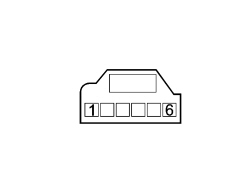

7030HE CHECK ON OPERATION OF FLAP CONTROL MOTOR
- Path
- Test > 70 FITTINGS > 7030 SUN ROOF/GLASS PANEL > 7030H AUTOMATICALLY OPERATED HOOD > 7030HE CHECK ON OPERATION OF FLAP CONTROL MOTOR
- Kind
- test / check procedure
- Applies to
- engines: 2.2 JTS, 3.2 JTS; all production periods; only with equipment: Spider
- Interactive page
- https://sloeber94.github.io/elrnDB-aBrrSpdr/en/#/946004032
Applies to: engines: 2.2 JTS, 3.2 JTS; all production periods; only with equipment: Spider
STEP | CHECK TO BE PERFORMED | REMEDIAL ACTION IF THE CHECK IS NOT OK |
|---|---|---|
1 | Check using Examiner Using the Examiner in the "Selection" ambient, select "Def flap actuator" and check that the flap is working properly (open, load, closed) Move on to Step 2 | Replace the flap kinematic components if damaged |
2 | Check the wiring Check the continuity of the wiring between the flap motor and the hood control unit | Restore the correct wiring between the hood control unit and the flap motor |
3 | Check on motor winding resistance Disconnect the motor connector Using the Examiner connect to pins 5 and 6 and check that the motor winding resistance is around 35 Ohm ±5% | Replace the flap motor |
4 | Potentiometer power supply check Using the Examiner in the voltmeter mode, connect the probes to pins 1 and 3 of the flap motor and check that the voltage is around 5 Volts | Replace the hood control unit Op. 7030H50 AUTOMATIC HOOD ACTIVATING SYSTEM CONTROL UNIT - R.R. FOLLOWING SYSTEM CHECK |
5 | Potentiometer signal check With the Examiner in the voltmeter mode, connect the probes to pins 1 and 2 and check that with the flap completely open the voltage is around 4.3 V whilst with the flap closed it should be around 1.2 Volts | Replace the flap motor |

Connector pin out
1 - Potentiometer negative
2 Potentiometer signal
3 + 5 V potentiometer power supply
4 Free
5 + 12 V Engine power supply
6 - Engine negative
Topics linked from this page (2)
- 7030H50 AUTOMATIC HOOD ACTIVATING SYSTEM CONTROL UNIT - R.R. FOLLOWING SYSTEM CHECK
- 7210E47 HOOD HOUSING COMPARTMENT SIDE COVER - R.R.